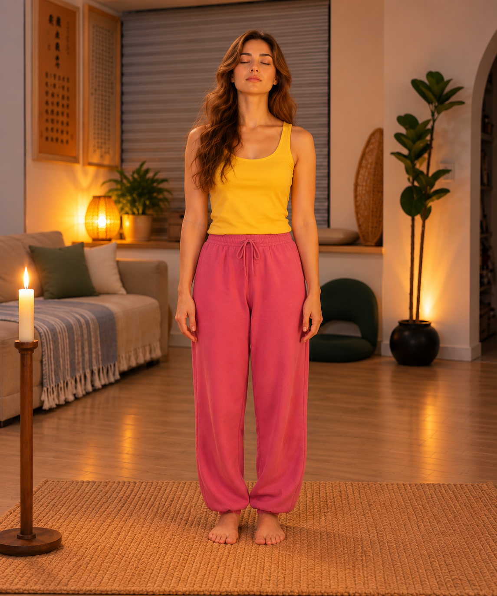
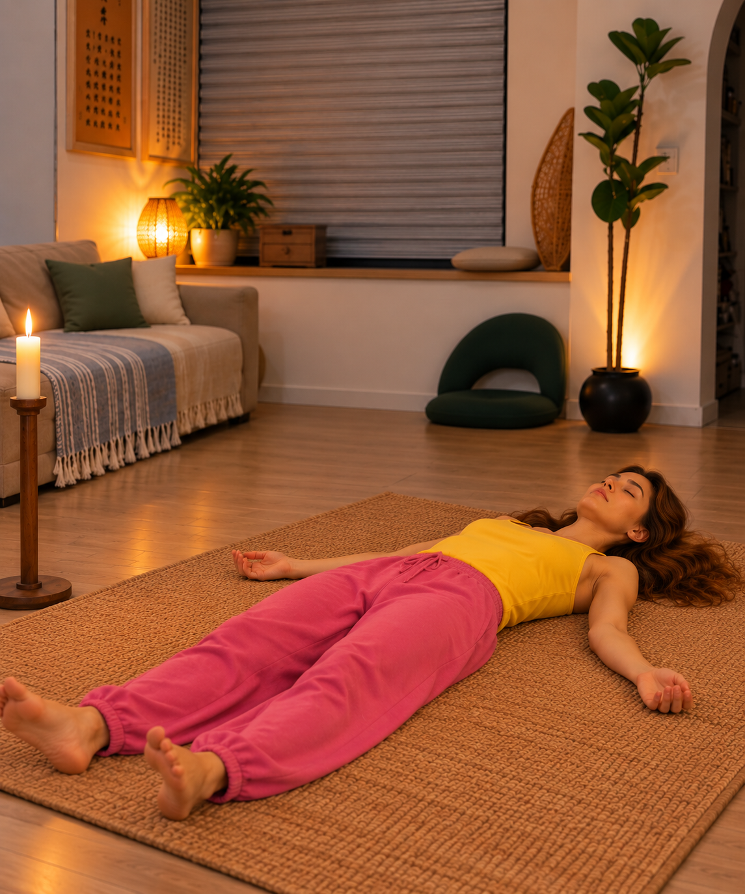
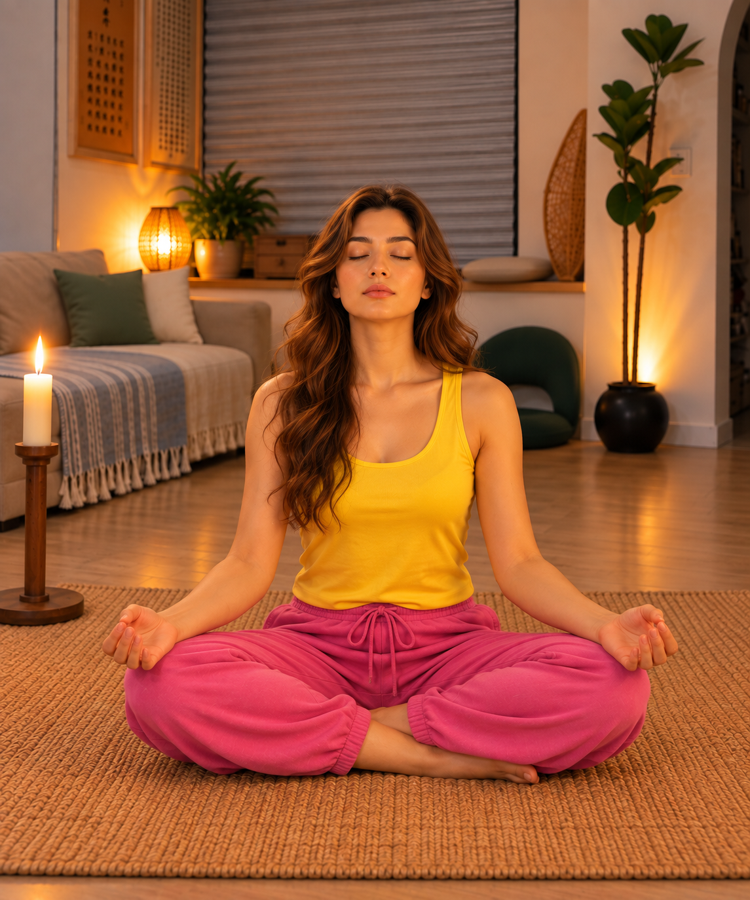

Медитация No-Mind
Используйте бессмысленные звуки, чтобы прервать непрерывное словесное движение ума, затем сидите в свидетельствовании и, наконец, полностью отпустите тело.
Для самой медитации включите аудио практики и следуйте всему процессу. Если хотите практиковать офлайн, сначала скачайте запись.
Стиль практики
Читайте по порядку: сначала поймите инструкцию этого этапа, затем посмотрите соответствующее изображение движения. Во время самой медитации можно включить аудио практики ниже.
Тарабарщина
Закройте глаза и выражайте себя бессмысленными звуками, не используя ни одного известного вам языка.

Идите внутрь
Сидите спокойно, держите спину естественно прямой, дыхание естественным; наблюдайте мысли, чувства и суждения.

Отпустите
Отпустите контроль, позвольте телу естественно упасть и продолжайте оставаться осознанными.

Возвращение
С последним ударом барабана голос Ошо ведёт вас снова сесть и напоминает перенести тихое осознавание практики в повседневную деятельность.

Метод — лишь вход. Использует ли он дыхание, танец, звук, темноту, сидение или отношения, важнее всего постепенно видеть происходящее, а не только гоняться за переживанием.
Начать медитацию · Аудио практики
Используйте это аудио для самой медитации. Можно воспроизвести его здесь или скачать на телефон для практики без интернета.